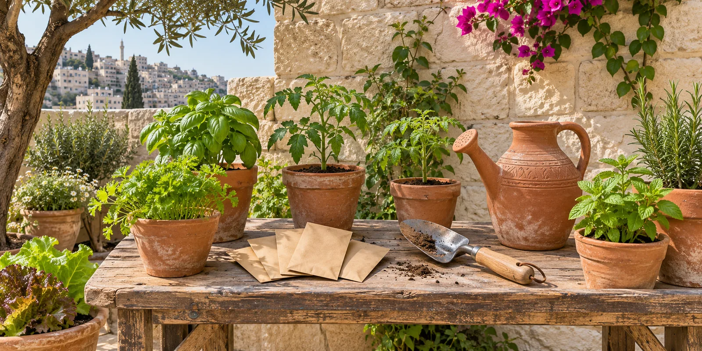

حديقة عبد الله
 أنا عبد الله. أستخدم OrtoFirst دفترًا لحديقتي، من لحظة العودة من التسوق حتى الحصاد.
أنا عبد الله. أستخدم OrtoFirst دفترًا لحديقتي، من لحظة العودة من التسوق حتى الحصاد.
في قسم إضافة إلى المخزون أسجّل البذور وتربة الزراعة والأدوات. أمسح الرمز الشريطي إذا كان موجودًا، وأدوّن مكان التخزين وتاريخ الصلاحية أو ملاحظة عند الحاجة.
في قسم تسجيل الاستخدام أسجّل ما استخدمته، ولو كان نصف كيس، أو أغيّر مكان العبوة. وقبل أن أشتري المزيد أتفقّدالمخزون وأضيف ما ينقصني إلى قائمة التسوق. وفيمفكرة الحديقة أدوّن مواعيد الأعمال وملاحظاتي للموسم القادم.
EatMeFirst
«أنشأنا OrtoFirst تطبيقًا مجانيًا للحديقة بالاستفادة من وظائف EatMeFirst. في EatMeFirst تستطيع تنظيم المؤونة ومعرفة ما لديك ومتابعة تواريخ الصلاحية وإعداد قائمة التسوق. الوظائف الأساسية مجانية والتغييرات تُحفظ فورًا في المتصفح.»
مفكرة الحديقة
«أعددت لك مفكرة نموذجية لترى كيف تعمل وما الذي يمكنك كتابته فيها. تصفّح الشاشات لترى كيف أسجّل البذر ونقل الشتلات والري والحصاد، وأين أجد البطاقات بعد حفظها.
إذا أخطأت في التاريخ أو أردت تصحيح ملاحظة، افتح ‹عرض البطاقات› واختر ‹تعديل›. يمكنك أيضًا حذف البطاقة وإنشاؤها من جديد. بعد بضع محاولات ستكتبها بسهولة وسرعة.»
بطاقات المفكرة
مهام اليوم والمهام القادمة
المهام السابقة والملاحظات
أرشيف المفكرة
إضافة مستلزمات الحديقة إلى المخزون
عند العودة من التسوق، سجّل مستلزمات الحديقة. امسح الرمز الشريطي إن وجد أو اكتب اسم المنتج يدويًا.
تسجيل استخدام مستلزمات الحديقة
«أختار منتجًا. إذا استخدمت القليل من المبيد أو البذور فقط، أضغط على ‹استخدام جزء› وأضبط المتبقي في تلك العبوة.»
مخزون الحديقة
«هنا أراجع ما تبقّى وأين حفظته. وعندما أستخدم شيئًا أسجّله في قسم تسجيل الاستخدام.»
قائمة تسوق الحديقة
«دوّن هنا ما تريد شراءه في المرة القادمة. تُضاف المنتجات إلى القائمة عندما تؤكد في قسم تسجيل الاستخدام أنك استهلكت آخر كمية منها. ضع علامة على الصنف عند وضعه في العربة، فيُنقل إلى آخر القائمة ويظهر مشطوبًا.»